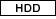
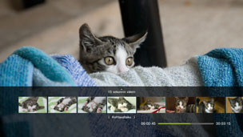
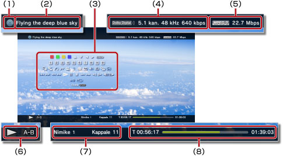

Videot > Ohjauspaneelin käyttäminen
Ohjauspaneelin käyttäminen
Näytössä näkyvän ohjauspaneelin avulla voit suorittaa monia toimintoja. Ohjauspaneelin voi tuoda näkyviin tai poistaa näkyvistä painamalla  -näppäintä.
-näppäintä.
Tällä sivulla näkyvien kuvakkeiden selitykset:
 |
Vain luettavalle Blu-ray-levylle (BD) tallennettu video |
|---|---|
 |
Uudelleenkirjoitettavalle BD-levylle tallennettu video |
 |
AVCHD-muodossa tallennettu video |
 |
|
 |
DVD-R- tai DVD-RW-levylle VR-tilassa tallennettu video |
 |
Kiintolevylle tallennetut videotiedostot |
 |
Tallennusvälineelle tallennetut videotiedostot* |
| * |
Joidenkin tallennusvälinetyyppien käyttämiseen tarvitaan USB-sovitin, joka ei tule tuotteen mukana. |
|---|
Huomautus
Sisällöntarjoaja on voinut asettaa sisällön toistamiselle rajoituksia. Jos niin on tehty, kaikki ohjauspaneelin vaihtoehdot eivät ehkä ole käytettävissä.
Punainen, vihreä, sininen ja keltainen kuvake


Suorita kuvakkeeseen liittyvä toiminto. Kuvakkeeseen liittyvä toiminto vaihtelee sisällön mukaan.
Ylös / alas / vasen / oikea

Valitse vaihtoehto.
Vahvista
Vahvista vaihtoehdon valinta.
Numeronäppäimistö

Syötä numeroita.
Ponnahdusvalikko
Avaa ponnahdusvalikko.
Valikko
Avaa valikko.
Päävalikko
Avaa päävalikko.
Palaa
Palaa tiettyyn videon kohtaan.
Kohtaushaku

Tämän toiminnon avulla voi katsella tietyin aikavälein luotavia pikkukuvia. Voit aloittaa videon toiston tietystä kohtauksesta valitsemalla sen pikkukuvan.

1. |
Valitse pikkukuvien luomisessa käytettävä aikaväli |
|---|
 - tai
- tai  -näppäimellä. Voit valita [Kappale]-vaihtoehdon tai jonkin monista aikaväleistä.
-näppäimellä. Voit valita [Kappale]-vaihtoehdon tai jonkin monista aikaväleistä.2. |
Valitse katseltavan kohtauksen pikkukuva |
|---|
 - tai
- tai  -näppäimellä. Toisto alkaa valitusta kohtauksesta.
-näppäimellä. Toisto alkaa valitusta kohtauksesta.Vihjeitä
- [Kappale]-vaihtoehdon voi valita ainoastaan sellaiselle videosisällölle, joka sisältää kappaletietoja.
- Kohtaushakua ei voi käyttää alle minuutin pituisen videosisällön kanssa.
- Kohtaushakua ei voi käyttää tietyn tyyppisen videosisällön kanssa.
- Kun valitset pikkukuvan, kohtauksesta toistetaan 15 sekunnin esikatseluosuus.
Mene


Aloita toisto tietystä luvusta tai kohdasta.
| Nimike X | Määritä nimikkeen numero. |
|---|---|
| Kappale X | Määritä luvun numero. |
| XX:XX / XX:XX:XX | Määritä aika. |
Vihje
(Mene) -toiminto ei ehkä ole käytettävissä kaikissa videotiedostoissa.
Kuvakulmavaihtoehdot
Jos videossa on useita kuvakulmavaihtoehtoja, voit valita niistä jonkin.
Äänivaihtoehdot
Jos videossa on useita ääniraitoja, voit valita niistä jonkin.
Tekstitysvaihtoehdot
Jos videossa on useiden kielien tekstityksiä, voit valita niistä jonkin.
Tekstitystyylivaihtoehdot
Jos videossa on useita tekstitystyylejä, valitse niistä yksi.
Äänenvoimakkuuden säätö
Säädä toistettavan videosisällön äänenvoimakkuutta.  (Videot). Valitse jokin yhdeksästä tasosta.
(Videot). Valitse jokin yhdeksästä tasosta.
Vihjeitä
- Äänessä voi ilmetä häiriöitä, jos äänenvoimakkuus on liian kovalla. Jos näin käy, alenna äänenvoimakkuutta.
- Tämä asetus voi olla kytketty pois käytöstä, kun käytetään tietyntyyppisiä äänilaitteita tai äänilähtöä.
AV-asetukset
Voit säätää toistettavan sisällön ulostulon asetuksia (Videot) -kohdassa. Näytettävät vaihtoehdot määräytyvät sisällön mukaan.
| Ruutukohinan vähennys | Tämä valinta vähentää vähäisiä häiriöitä. |
|---|---|
| Lohkokohinan vähennys | Tämä valinta vähentää näytössä näkyviä mosaiikkimaisia häiriöalueita. |
| Ääriviivakohinan vähennys | Ota käyttöön ääriviivakohinan vähennys, joka vähentää kuvien ääriviivojen häiriöitä. |
| Skaalaus | Valitse tämä, jos haluat skaalata ulostulosignaalin. Valittu arvo näkyy kohdassa [Skaalain]  (Asetukset) > (Asetukset) >  (Videoasetukset). (Videoasetukset). |
| Videoulostulon formaatti | Määritä videon ulostulon formaatti. Valitse videoulostulon formaatti DVD- ja BD-levyjen toistoa varten. Määritetty asetus näkyy kohdassa [BD / DVD videoulostulon formaatti (HDMI)] valittaessa (Asetukset) > (Videoasetukset). |
| Y Pb / Cb Pr / Cr Super-White | Valitse tämä, jos haluat käyttää Super-White-signaalia. Super-white-signaalia voidaan nyt käyttää toistettaessa DVD-, BD- tai AVCHD-levyjä. Määritetty asetus näkyy kohdassa [Y Pb / Cb Pr / Cr Super-White (HDMI)] valittaessa (Asetukset) >  (Näyttöasetukset). (Näyttöasetukset). |
| RGB Täysi | Ota täysi RGB-kuva käyttöön. Valittu asetus näkyy [RGB Täysi] -kohdassa valittaessa (Asetukset) > (Näyttöasetukset). |
| Dynaamisen alan hallinta | Ota dynaamisen alan hallinta käyttöön. Ota PS3™-järjestelmän dynaamisen alan hallinta käyttöön Dolby Digital -ääntä toistavien BD- ja DVD-levyjen toiston aikana tai poista se käytöstä. Valittu arvo näkyy kohdassa (Asetukset) > (Videoasetukset) ja [BD/DVD dynaamisen alan hallinta]. |
| Audioulostulon formaatti | Määritä äänen ulostulon formaatti. Valitse DVD- ja BD-levyjä toistettaessa käytettävä äänen ulostuloformaatti. Valittu asetus näkyy [BD/DVD-ääniulostulon formaatti (HDMI)]- tai [BD-ääniulostulon formaatti (optinen digitaali)] -kohdassa valittaessa (Asetukset) > (Videoasetukset). |
Aikavaihtoehdot
Valitse, näytetäänkö nimikkeen tai luvun aika kuluneena aikana vai jäljellä olevana aikana. Vaihtoehdot vaihtelevat toistettavan sisällön mukaan.
Näyttötapa
| Normaali | Sovita video näyttöön muuttamatta sen mittasuhteita. |
|---|---|
| Suurennos | Sovita video koko näyttöön muuttamatta sen mittasuhteita. Videon ylimmäiset ja alimmaiset tai oikean- ja vasemmanpuoleiset osat jäävät näytön ulkopuolelle. |
| Koko ruutu | Aseta kuva näkymään koko näytössä siten, että muutat kuvan suhteita venyttämällä kuvaa sekä pysty- että vaakasuunnassa. |
| Alkuperäinen | Näytä video sen alkuperäisessä koossa. |
Vihje
Näyttötilan vaihtaminen ei ole mahdollista kaikkien videotiedostojen kanssa.
Vaihda kuvake
Vaihda videotiedoston kuvake (pikkukuva). Valitse (Vaihda kuvake) videotiedoston toiston aikana siinä kohdassa, jossa näkyy kuva, jonka haluat asettaa kuvakkeeksi.
Vihjeitä
- Kuvakkeen vaihtaminen ei ole mahdollista kaikkien videotiedostojen kanssa.
- Alle kahden sekunnin pituista videotiedostoa ei voi käyttää kuvakkeena.
Poista
Poista toistettava videotiedosto.
Näyttö
Katsele toistotietoja ja muita asianmukaisia tietoja. Tiedot vaihtelevat toistettavan sisällön mukaan.

(1) |
Tallennusväline |
|---|---|
(2) |
Nimike |
(3) |
Ohjauspaneeli |
(4) |
Äänikoodekki, kanavanumero, näytteenottotaajuus ja bittinopeus |
(5) |
Videokoodekki ja bittinopeus |
(6) |
Tilakuvake |
(7) |
Nimike ja kappale |
(8) |
Kulunut aika ja kokonaiskesto |
Edellinen (palaa alkuun) tai seuraava
Siirry edelliseen tai seuraavaan lukuun.
Vihje
Kun toistat tallennusvälineelle tai kiintolevylle tallennettuja videotiedostoja,  (Seuraava) ei ole käytettävissä. Jos valitset
(Seuraava) ei ole käytettävissä. Jos valitset  (Edellinen), toisto aloitetaan videotiedoston alusta.
(Edellinen), toisto aloitetaan videotiedoston alusta.
Pikakelaus taakse / Pikakelaus eteen
Pikakelaa toistettavaa sisältöä eteen- tai taaksepäin. Jokainen  -näppäimen painallus muuttaa toistonopeutta.
-näppäimen painallus muuttaa toistonopeutta.
Toista
Vihje
Jos pysäytät videosisällön toiston, sen toisto aloitetaan pysäytyskohdasta, kun toistat sen seuraavan kerran.
Jos haluat aloittaa toiston alusta, lopeta toisto ja tuo XMB™-valikko näkyviin painamalla PS-näppäintä. Valitse kuvake, paina -näppäintä ja valitse sitten asetusvalikosta [Toista alusta alkaen].
Tauko
Keskeytä toisto väliaikaisesti.
Stop
Hyppää taaksepäin / Hyppää eteenpäin
Siirry videossa eteen- tai taaksepäin 15 sekunnin verran.
Hidastus (taaksepäin) / Hidastus (eteenpäin)
Ruutu taaksepäin / Ruutu eteenpäin
Siirry videossa yksi kuva kerrallaan.
A-B-kertaus
Toista tiettyä sisällön osaa jatkuvasti.
1. |
Valitse toistettavan osan alussa |
|---|---|
2. |
Paina toistettavan osan lopussa |
Vihje
Voit tyhjentää A-B-toistotoiminnon valitsemalla (A-B-kertaus).
Kertaus
Vihje
Tyhjennä jatkuva toistotoiminto valitsemalla (Kertaus), kunnes [Kertaus poissa päältä] näytetään.